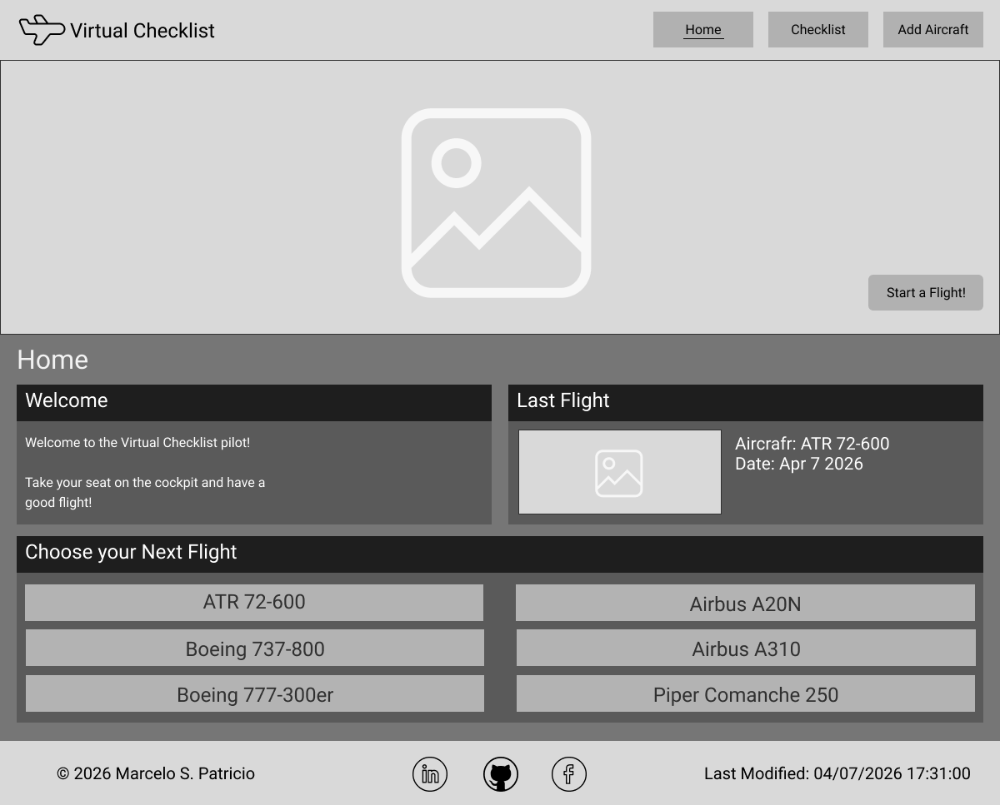
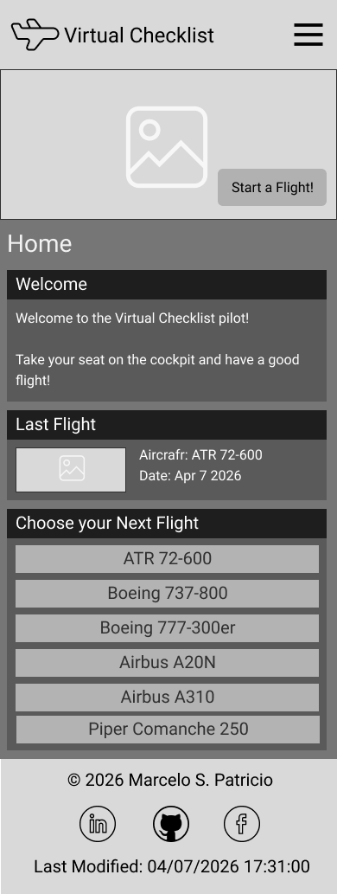

Site Name
Name: Virtual Checklist
Reason: The name is clear and direct for flight simulation enthusiasts. Every 'simmer' will recognize the site's purpose almost immediately. Since it's not linked to a single aircraft, the site will serve as a universal tool for various planes and their procedures.
Site Purpose
The site provides interactive checklists and procedures for flight simulation enthusiasts. It includes flight phases to help users complete all necessary steps to get from point A to point B. It is a tool that flight simmers can have on hand to ensure every stage of a virtual flight is completed correctly.
Scenarios
Scenario 1 (ATR 72-600): The ATR 72-600 doesn't have a traditional APU. It uses the right engine in 'Hotel Mode' to provide power without spinning the propeller. What are the procedural steps to engage the Prop Brake and provide power and air conditioning to the cabin?
Scenario 2 (Boeing 737-800): What are the shutdown procedures for the Boeing 737-800 after arriving at the gate?
Color Scheme
Primary Color (Tropical Teal - #00ADB5): Branding, titles, navigation bar backgrounds, and primary borders. Modern "avionics" style.
Secondary Color (Platinum - #EEEEEE): Main body text color and technical labels. Provides high contrast on dark backgrounds for readability.
Accent Color (Amber Flame - #FFB000): Call-to-action elements, links, and buttons that require interactions (Sim-Actions).
Background Color Lighter (Slate Black - #27373F): Page background color. Designed to provide visual depth.
Background Color (Jet Black - #1B262C): Card/section background color and titles on dark surfaces. Designed to reduce eye strain during long flight simulation sessions.
Success (Laser Green - #39FF14): Functional color used to indicate completed tasks ("Checked" items) on the checklist page.
Typography
Heading Font (Kode Mono - h1, h2, h3): All headings. Provide modern tech aesthetic
Body Font (Roboto - paragraphs): General content. Ensure clean readability.
Display Font (Doto - checklist): Used for interface, aircraft selection lists, and interactive checklist items. Simulate digital dot-matrix cockpit display.
Wireframe
Desktop Wireframe

Mobile Wireframe
